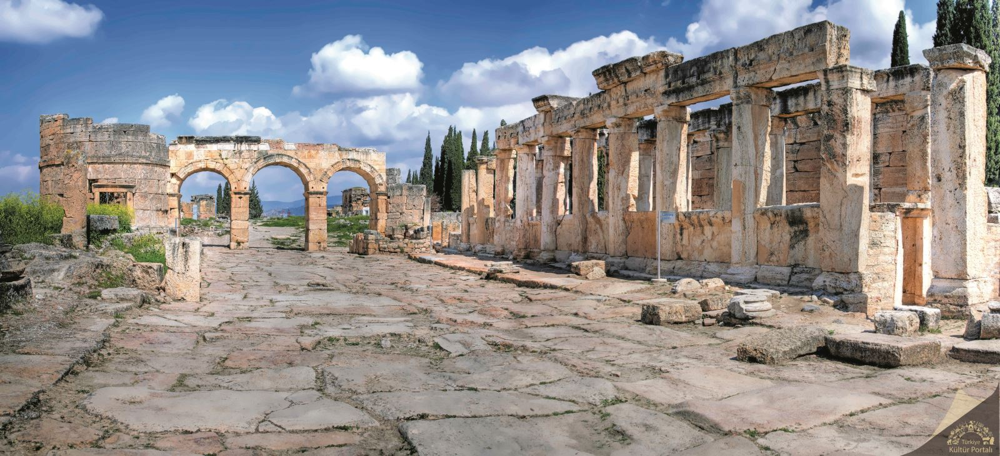

Pamukkale Travertenleri'nin hemen yanında tüm görkemiyle ayakta duran Pamukkale Hierapolis Antik Kenti'nin kalıntılarının büyük bölümü de bu dönemden. Eşi bulunmaz güzellikteki travertenler ile birlikte bu kalıntılar UNESCO Dünya Kültürel ve Doğal Miras Listesi’nde yer alıyor. 2 bin yıl öncesinde de Bergama Krallığı Pamukkale'nin çekiciliğine karşı koyamamış ve travertenlerin yanına Hierapolis Kenti’ni inşa etmiştir. Bu dönemde Hierapolis bir termal sağlık merkezi gibi görev yapmış ve şifalı olduğuna inanılan kaynakları binlerce yıl boyunca Anadolu’nun farklı yerlerinden gelip sağlık ve güzellik arayan kişiler tarafından ziyaret edilmiştir.
Tarihçesi:
Hierapolis Antik Kenti oldukça iyi biçimde korunarak günümüze ulaşmayı başarmıştır. Roma Hamamı, günümüzde arkeoloji müzesi olarak kullanılıyor. Antik tiyatro, tapınaklar, anıtsal çeşmeler, mezarlar, agora, gymnasium gibi yapılar da size 2 bin yıl öncesinin kentinde olduğunu hissettirecek derecede iyi durumda. Hierapolis, Hristiyanlık açısından da kutsal bir yerleşim. Bu kutsallığın en önemli nedeni İsa’nın 12 havarisinden birisi olan Phillippus’un burada öldürülmüş olması ve mezarının da burada bulunması. 5'inci yüzyılda saray mimarlarınca yapılan, azizin mezarının yer aldığı Martyrium, Hristiyanlığın kutsal yapılarından. İçinde vaftiz teknesi ve piskopos ayin mekânlarının yer aldığı 6'ncı yüzyıl katedrali ile 7'nci yüzyıla tarihlendirilen Direkli Kilise diğer önemli Hristiyan yapıları. Daha küçük pek çok kilise de kentin çeşitli yerlerine dağılmış durumda. Tüm bu yapılar Hierapolis’in Bizans Dönemi’nde önemli bir dinsel merkez olduğunu kanıtlıyor.
Hierapolis coğrafi konumu ile kendisini çevreleyen çeşitli tarihi bölgeler arasında yer almaktadır. Antik coğrafyacı Strabon ile Ptolemaios verdikleri bilgilerde, Karia bölgesine sınır olan Laodikeia ve Tripolis kentlerine yakınlığı ile Hierapolisin bir Frigya kenti olduğunu ileri sürerler. Antik kaynaklarda, kentin Helenistik Dönem öncesi adı ile ilgili bir bilgi bulunmamaktadır. Hierapolis olarak adlandırılmadan önce kentte bir yaşamın var olduğunu Ana Tanrıça kültünden dolayı bilinmektedir. Kentin kuruluşu hakkında bilgilerin kısıtlı olmasına karşın; Bergama Krallarından II. Eumenes tarafından MÖ II. YY. başlarında kurulduğu ve Bergamanın efsanevi kurucusu Telephosun karısı Amazonlar kraliçesi Hieradan dolayı, Hierapolis adını aldığı bilinmektedir. Hierapolis, Roma İmparatoru Neron dönemindeki (MS 60) büyük depreme kadar, Helenistik kentleşme ilkelerine bağlı kalarak özgün dokusunu sürdürmüştür. Deprem kuşağı üzerinde bulunan kent, Neron dönemi depreminden büyük zarar görmüş ve tamamen yenilenmiştir. Üst üste yaşadığı bu depremlerden sonra kent, tüm Helenistik niteliğini kaybetmiş, tipik bir Roma kenti görünümünü almıştır. Hierapolis Roma döneminden sonra Bizans döneminde de çok önemli bir merkez olmuştur. Bu önem, MS IV. yüzyıldan itibaren Hıristiyanlık merkezi olması (metropolis), MS 80 yıllarında, Hz. İsa’nın havarilerinden olan, Aziz Philipin burada öldürülmesinden kaynaklanmaktadır. Hierapolis, XII. yüzyıl sonlarına doğru Türklerin eline geçmiştir.
Hierapolis Antik Kenti’nin Bölümleri:
- Tiyatro: Hierapolis'in en önemli yapılarından biridir. Büyük bir tiyatro kompleksi olup, sahne binası, oturma düzeni ve diğer yapısal özellikleriyle dikkat çeker.
- Büyük Hamam Kompleksi: Masif duvarları ve bazı tonozları günümüze kadar ulaşmış olan büyük bir hamam yapısıdır.
- Frontinus Caddesi: Hierapolis'in ana caddesi olan geniş bir cadde. Bu cadde, kentin ana yolunda yer alır ve mimari açıdan önemli bir konuma sahiptir.
- Ticaret Agorası: MS 60 yılında meydana gelen bir deprem sonrasında oluşan geniş bir pazar alanıdır. Ticaretin gerçekleştiği bir pazar yeri olarak kullanılmıştır.
- Bizans Kapıları: Kuzey ve Güney Bizans Kapıları olarak adlandırılan iki ana kapı, Hierapolis'in sur sistemi içinde yer alır. Bu kapılar, kente giriş ve çıkışları kontrol etmek için kullanılmıştır.
- Gymnasium: Sütun dizileriyle çevrili olan bir spor ve eğitim kompleksi. Gençlerin eğitim aldığı ve fiziksel aktivitelerde bulunduğu bir yerdi.
- Tritonlu Çeşme Binası: Apollon Tapınağı yakınında bulunan anıtsal bir çeşme binası. Triton figürleriyle süslenmişti.
- İon Sütun Başlıklı Ev: İkincil bir uzun yol üzerinde yer alan bir ev. MS 2. yüzyıla tarihlenir.
- Latrina: Hierapolis'in halka açık tuvalet kompleksi. Yıkıntılar halinde günümüze ulaşmıştır.
- Apollon Kutsal Alanı: Hierapolis'in en önemli tanrısı Apollon'a adanmış büyük bir anıtsal yapı. Tapınak ve kehanet merkezi olarak kullanılmıştır.
- Su Kanalları ve Nympheumla: Kentin içme suyunu sağlayan su kanalları ve çeşmeler. İki aquadükt tarafından beslenir.
- Katedral: Hierapolis'in en önemli Hristiyan ibadet yapılarından biri. Üç nefli bir yapıdır ve vaftiz teknesi, apsis ve papazların oturduğu bölümleri içerir.